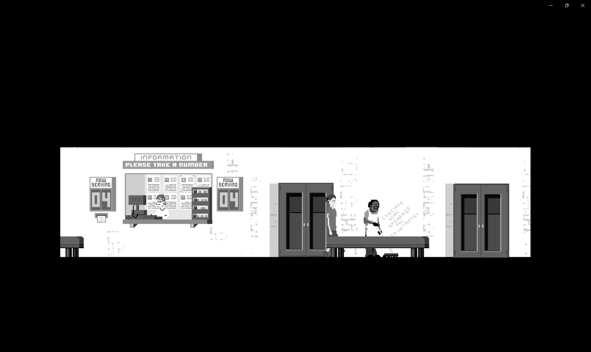
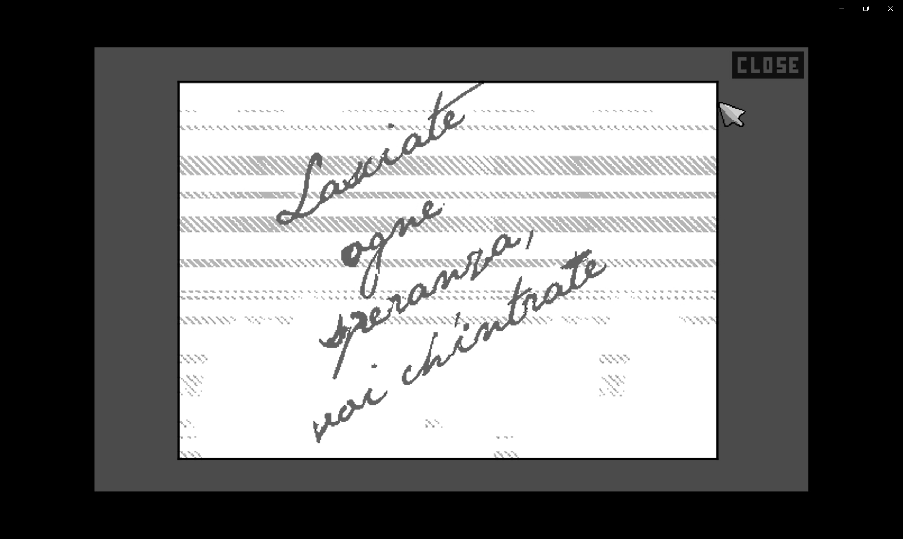
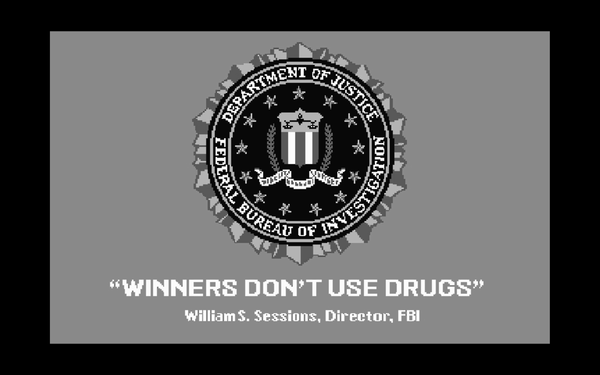
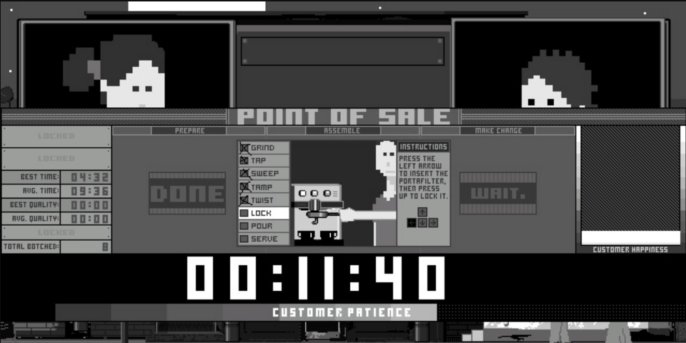
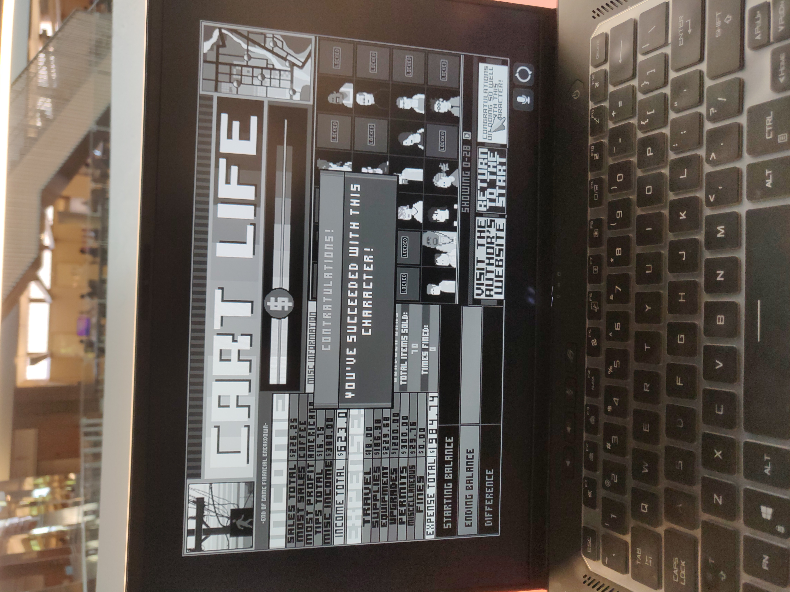

Why you should(n't) be playing Cart Life
By Steven Hu
CHID 250 B Summer 2022
It was a run like any other. Playing as Melanie, a single mother doing her best to keep custody of her daughter, this meant running a coffee stand to prove financial independance. And running a stand requires a permit. However, all experienced players know that in this game, time is money. And that permit? Getting it can take forever! Unfortunately, I had drawn a 20, meaning that I would have to wait for 16 other people to get their permits. I would not be getting mine today. I would need to restart my run...unless...
 "Lasciate ogni speranza, voi ch'entrate"With nothing better to do, I was surprised that I could interact the graffiti on the wall. Even more surprisingly, I was able to question the janitor about it - its italian for "abandon all hope, ye who enter" - spoilers: this is how you can skip the wait; by talking to the janitor, he'll give you the card next in line in exchange for $10. Time is money, so of course I took the offer!
Despite the graffiti's meaning, this would become my first (and only) successful run. This would also be the only secret I managed to discover where small talk managed to have benefit, as I had previously assumed talking to people was a waste of time - chatting can lose customers, and with such a tight income, the game simply doesn't allow for such affordances. But it got me thinking what the game is truly about - is the narrative about how the lives and relationships of the working class is controlled by capitalist society, or is it about trying to show the importance of human connection and investment? For this, we need to take a closer look at the game mechanics
Time is Money
I've said it twice before, and for good reason - anyone who has played Cart Life before knows that there isn't an option to pause the game. Every second in real life is a minute in game, so playing requires a decent time investment where every moment is felt excruciatingly, whether it's rushing to pick your daughter from school on foot, or frantically serving your next customer without spilling before their patience runs out, until customer after customer you realized you've missed the court hearing, forcing a restart. So those 24 minutes really feel much longer, warping the player's sense of time as they are temporarily trapped in Georgetown. It forces the player, an individual with leisure time, to symphasize with those who live pay check to pay check, who will likely not be able to experience this game, and are forced to live this way 24/7. Except in real life, there are no saves to go back to.
WINNERS DON'T USE DRUGS
Each of the characters you can play as - Melanie, Vinny, and Andrus, are experiencing the hardest weeks of their lives. However, it's not because of my experience in the game or knowledge of their backstories (which you can learn about through the dream cutscenes experienced each night), rather the player is meant to pick up on this from the graphics and sound design. From the character selection screen to the game intro, flashing a warning you might see in archaic token fed acrade cabinet, it's apparent from the colorless and primitive pixelized graphics that working retail 24/7 is a bleak and even brutal existence. The music, being relatively upbeat, does provide some relief, though it also exists to remind the player to never stay still or become idle; the frantic beat emphasizes the stress the player's character has been going through and keeps them on edge. It's a mercy then to the player that these game elements remain consistent. Whether it's due to depression or a crippling addiction, each character has already been through the wringer, and it's your job to make sure things do not become worse for them by managing their energy and hunger. More importantly however, by taking care of your character, it also reminds the player to take care of themselves, something that many video game addicts manage to neglect by playing hours on end.
The Daily Grind
There are a few guides for the game (like this one), and they are all consistent with the advice that in order to win, you must form a regular and consistent schedule. If only it were that easy in real life! For me at least, COVID completely changed my daily routine after being used to waking up and attending Zoom classes in bed. So when forced to play a game that was about waking up at the crack of dawn, wait to take Laura to school, and then grinding coffee beans day after day, I didn't feel motivated to play because the endgame of monotonous behavior felt a bit pointless to master since none of that (aside from the typing minigames) could be applied to the real world. Moreover, the game felt like a time management boot camp! Why should I devote time to this game when there are assignments overdue, dishes in the sink, or friends or family that I could be checking up on. Only after having a handle on these things did I start to enjoy the game, and shortly after discovering the secret trick with the janitor did I decide to become less of a perfectionist - unlike most single player exploration games that I enjoyed like the Fallout series, I had to recognize that I could not save at any moment that I wanted, and that fully optimizing for every dollar or collectible wasn't possible. While I did attempt to seek out similar secrets and explore Georgetown, I also tried to act realistically instead of resetting unless absolutely neccessary, satisfying my bounty-hunterish motivations while also helping to develop real life time management strategies. It's really a shame that I could not fuly explore the world or meet every npc in the game though - despite the simplistic graphics, the developer really tried to make every character and location unique, so nothing felt copy pasted or procedurally generated. And a lot of care went into the 8-bit music, as there was a different tune for every area in the game.
The End???
So, after what felt like an eternity in black and white pixel hell, it was time for the final hearing. The game intro had stated that I needed to have an income of $1000 to keep custody of Laura, and I was $400 short. So I was quite surprised when this happened:  "It's okay. Everything is going to be okay." Or at least that's what Melanie's sister, Rebecca, told me before entering the court room and the credits started rolling. But did I really succeed? Upon returning to my save, I was disapointed to discover that there was no going back to the previous day, so in order to uncover any other possible endings, I'd have to play the game again.
And of course, there were the bugs - it seems that I there was mean to be a cutscene Melanie's ending, but instead I was met with a black screen. I even tried combing through the source code, and it bcome obvious why the game was no longer supported - while the developer clearly put a lot of care into the game, the code was a confusing spaghetti and it's a wonder I had been able to do an entire playthrough without experiencing any game breaking errors until the very end. Maybe I "won" because I walked Laura to school everyday. Maybe it was because the judge needed proof of income, but didn't specify how much I needed to make - in real life after all, this could simulate that humans, unlike machines, can make exceptions for extraordinary cirumstances. Or maybe we aren't supposed to know, as other playthroughs have experienced the same abrupt ending, showing that no matter how hard someone works, they'll never truly know if such efforts will pay off in the future. Granted, these playthroughs did not make $1000, and I suppose a very dedicated player could optimize to get the "true" ending, but for me at least, I think I understand the point of the game. To me, the game is not about "winning" and making the most money or trying to get the best ending, it's about living life to the fullest and being thankful for the time that we can experience outside of games. We all feel controlled by society to some degree, but in order to resist the imposed grind, we can invest time and confide in others to make the burden lighter and lead more meaningful lives. So if you ever feel like you have too much free time, this is the game for you. And thanks for reading as this analysis became much longer than intended, so make sure to go out and touch some grass too.